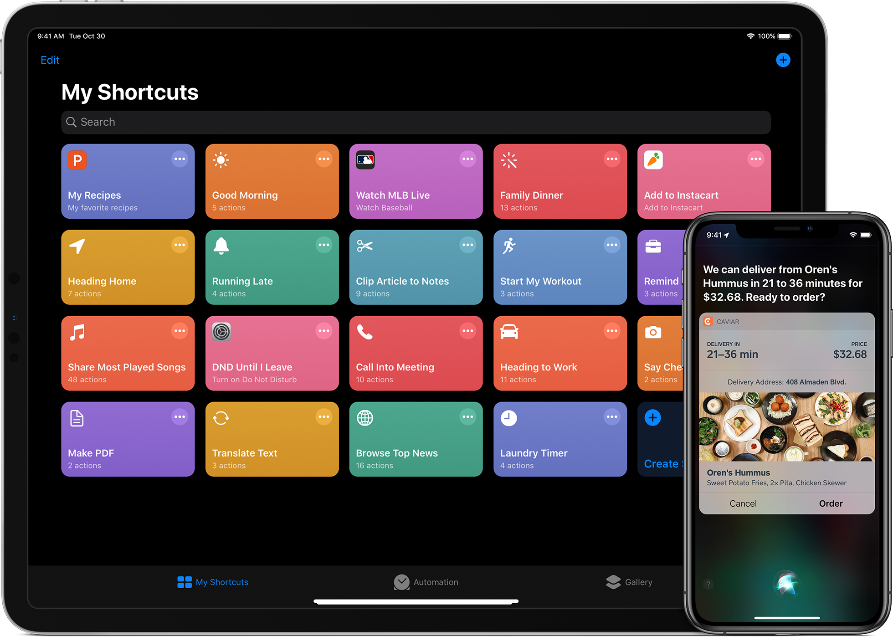

设计绝佳的 Siri 捷径 - Siri 捷径从设计到构建（中）
上篇文章通过一步步深入 SiriKit 的细节，讲述了 SiriKit 可以让 app 发挥的领域以及引出了 Siri 捷径的多种类型和各种设计规范。这篇文章将用一个实际的例子一步步地从细节上去设计 app 的 Siri 捷径。
通常情况下，Siri 捷径（Siri Shortcuts）是在 iOS 上把你的 app 的功能在更多地方带到更多用户面前的一个好方法。


Copyright © 2020 Powered by MWeb, Theme used GitHub CSS.